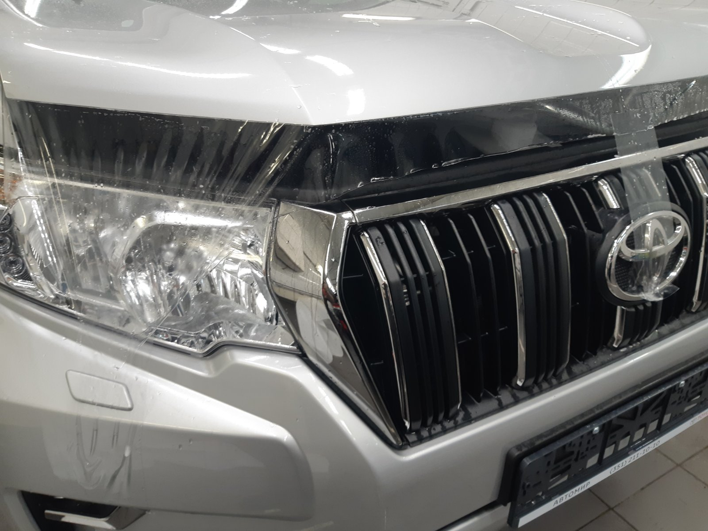
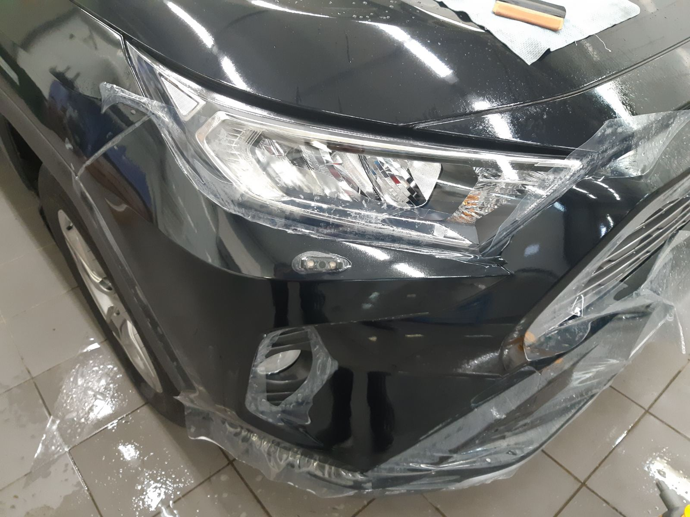
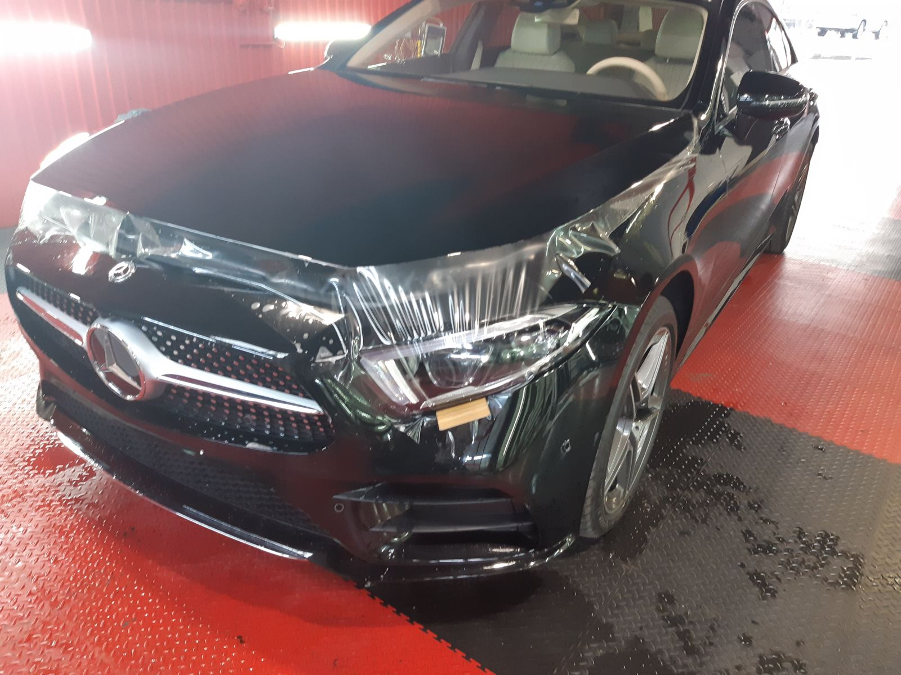
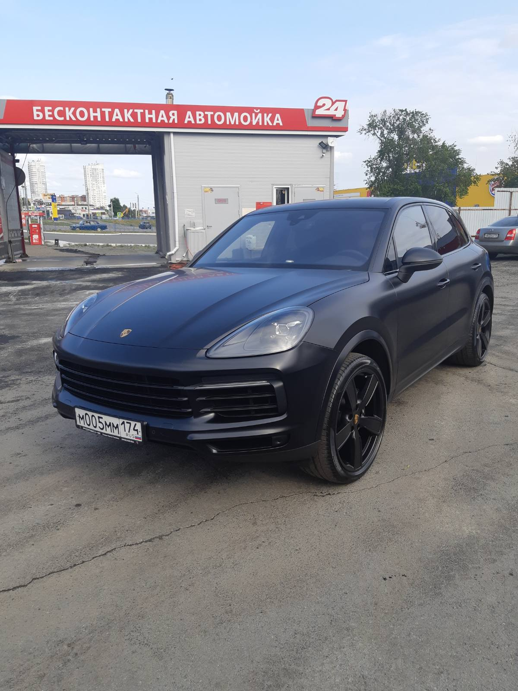

Detailing студия в челябинске
PRO 100 GARAGE - это надёжный сервис, который занимается детейлингом, бронировкой и тонировкой машин. А также мелким кузовным ремонтом и покраской.
О нашей студии
Мы занимаемся полным детейлингом, тонировкой, бронировкой автомобилей и мелким кузовным ремонтом с покраской.
В нашей команде специалисты высокого качества с опытом работы более 10 лет. Мы работаем с любыми марками автомобилей от Lada до Porshe.
Наши специалисты знают все тонкости и особенности работы с автомобилем любого бренда - это помогает выводить работу на высокий уровень.
Так что, если вы действительно любите свою машину, тогда вам стоит довериться и мы покажем вам, что значит качество!
Обслуживание автомобиля организовано согласно требованиям заводов - изготовителей. Оборудование техцентра соответствует всем современным требованиям.
Обслуживание автомобиля организовано согласно требованиям заводов - изготовителей. Оборудование техцентра соответствует всем современным требованиям.




КОНТАКТНАЯ ИНФОРМАЦИЯ
Наш номер: 8-800 555 35 35
Наш сервис находится в частном секторе.
По адрессу ул. Рабоче-Крестьянская 79.
Ниже вы можете посмотреть точное место положение.
пн-пт: 10:00 - 22:00
сб-вс: 10:00 - 18:00